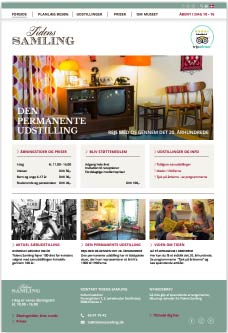

Til vores første projekt på multimedie uddannelsen, skulle vi lave et redesign af hjemmesiden for museet 'Tidens Samling'. Igennem research fandt vi ud af hvor de største problemer lå henne så vi havde et sted at starte. Vi fandt ud af at det største problem var at det var besværligt og ikke ligetil at finde den information der blev ledt efter. Information som åbningstider og priser var dem der lå underligt gemt væk. Det var også de informationer brugerne havde udtalt sig om var sværest at finde. Yderligere tænkte vi også på at museets hovedsagelige målgruppe, var den ældre generation. Derfor sørgede vi også for at hjemmesiden var venlig for de svagtseende. Det viste er det endelige redesign af hjemmeside. Farverne er behagelige, selv for de svagtseende. De mest vigtige informationer er placeret på forsiden, så det er noget af det første brugeren opdager. Samtidig er det stadig muligt at kigge videre på hjemmesiden og opdage hvad den egentlig gemmer på af informationer.

Projekt 2
Til vores projekt nummer to, skulle vi lave en interaktiv installation for Farvergården. I anledning af deres H.C. Andersens Festival, vil de gerne tiltrække så mange mennesker som muligt. Deres ulempe er at de ligger godt gemt væk i Kulturmaskinen, og folk kommer ikke altid naturligt ind til dem. Det vil de gerne have ændret på, især til deres kommende festival. De kunne godt tænke sig en interaktiv installation, som ville tiltrække nye besøgende til Farvergården. Vi besluttede at lave en installation der handlede meget om muligheden for at iscenesætte sig selv, og muligheden for at lege med ord, da det ville være en hovedfaktor til festivallen. Iscenesættelsen var for bedst muligt at ramme de unge voksne, som godt kan lide at dele deres oplevelser på de sociale medier. Ved hjælp af deres delinger på de sociale medier, håber vi på at kunne lokke endnu flere mennesker til installation, så de også kan iscenesætte sig selv. Idéen med ordene ligger i, at der vil være mulighed for at lave sætninger eller nye ord, eller ændre på andres i forvejen lavede sætninger og ord. Ordene ville være magneter på en tavle og nemme at "stjæle", og sætte op rundt omkring i byen. Dette vil også påvirke til at folk undres og bliver nysgerrige. Til vores udstilling med installationen, havde vi sat ord på gulvet lidt rundt omkring, og flere sagde de blev nysgerrige over hvor de førte hen. For bedst muligt at fremvise installationen, havde jeg lavet en 3D model af installationen i passagen hvor vi tænkte den skulle være.